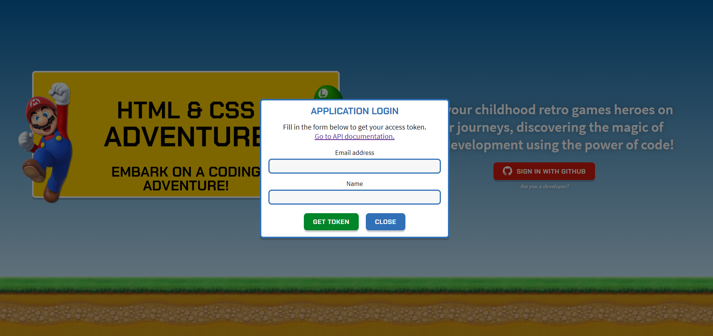

Pentru a accesa exercițiile, mai întâi este necesar să vă conectați apăsând pe Sign in with Github. Dacă este prima
oară când accesați aplicația, în continuare veți fi trimis pe o pagină de Github unde vă este cerută permisiunea pentru
utilizarea datelor voastre publice:
Cerere permisiuni
Pentru a continua, va trebui să apăsați pe butonul verde cu textul Authorize anav238. După ce faceți click pe acest buton,
veți fi redirecționat către pagina de exerciții HTML.
Conectarea pentru aplicații
Pentru a accesa exercițiile ca aplicație externă, va trebui să dați click pe link-ul Are you a developer? de sub butonul
cu textul Sign in with Github. Dacă acesta nu apare, înseamnă că accesul aplicațiilor externe la API a fost dezactivat
de către un administrator. Dacă apare și dați click pe link, se va deschide următorul popup:

Cerere permisiuni
Pentru a obține tokenul va trebui să completați datele cerute și apoi să apăsați pe butonul Get Token. În caz că îl
pierdeți, puteți accesa oricând pagina și să introduceți aceeași adresă de email pentru a obține același token. Pentru
a vedea documentația Swagger a API-ului, dați click pe link-ul Go to API documentation. Pentru a închide popup-ul,
dați click pe butonul Close.
În continuare veți putea folosi aplicația cu Postman sau alt program asemanator, adăugând token-ul primit în header,
câmpul Authorization, ca Bearer Token.
Meniul principal
După autentificare, veți fi redirecționați către exerciții. În partea de sus a paginii se regășește denumirea site-ului,
cât și câte un buton ce reprezintă o legătură pentru fiecare din cele patru pagini. Butonul corespunzător paginii curente
va fi evidențiat cu un fundal alb.
Meniul principal pe ecrane mari
Pe ecranele mici, aceste butoane sunt afișate în meniul de tip hamburger, la click pe butonul negru.
Meniul principal pe ecrane mici
Butoanele din meniul principal funcționează astfel:
HTML WORLD - duce pe pagina cu exerciții HTML, unde se va deschide automat exercițiul la care ați rămas (dacă
e prima oară când folosiți site-ul, se va deschide exercițiul 1); putem observa că este pagina activă, având culoarea
de fundal alb.
CSS WORLD - duce pe pagina cu exerciții CSS, unde se va deschide automat exercițiul la care ați rămas (dacă
e prima oară când folosiți site-ul, se va deschide exercițiul 1).
LEADERBOARD - duce pe pagina ce conține topul celor mai buni jucători. Aici poți afla cine au fost cei mai rapizi
jucători sau cine a trimis soluțiile cele mai corecte, și poți vedea și unde te clasezi în acest top.
PROFILE - aici poți vedea statistici personale, nivelul HTML, respectiv nivelul CSS la care ești, scorurile pe
care le-ai obținut la corectitudine și viteză și, dacă opțiunea a fost activată de către administratori, un Access
Token care poate fi folosit pentru a juca din Postman sau alte programe asemănătoare, în loc de jucarea standard
pe site cu interfață grafică.
Deconectarea
Pentru a vă deconecta de pe site, accesați pagina Profile din meniul principal și dați click pe butonul cu textul
Sign out.
Pagina de profil cu butonul Logout.
Rezolvarea exercițiilor
Rezolvarea exercițiilor se face pe paginile HTML WORLD și CSS WORLD. Pe ecrane mari, acestea au următoarea structură:
Structura unei pagini de exerciții
Pe ecrane mici, structura va fi aceeași, dar lista de nivele va putea fi accesată doar prin click pe butonul negru din
meniul principal, iar chenarele vor fi așezate unul sub celălalt. În continuare vom explica cum funcționează elementele pe
ecranele mari.
În partea din stânga a paginii se găsește un meniu ce conține titlul (HTML CHALLENGES sau CSS CHALLENGES, după caz), urmat
de un număr de butoane egal cu numărul de nivele deblocate. Dacă este prima oară când jucați, singurul buton care va apărea
va fi cel pentru primul nivel.
În partea din dreapta a paginii, pe centru se găsește descrierea exercițiului, care vă introduce în povestea jocului și
oferă indicații prețioase pentru rezolvarea exercițiului, inclusiv (pentru majoritatea nivelelor) documentație utilă de
pe Mozilla Developer Network, pe care o puteți găsi apăsând pe link-urile de sub textul Useful documentation. Înainte de a începe un exercițiu, citiți cu
atenție această secțiune. Dacă documentația nu este oferită, se precizează în descriere că trebuie să o căutați. Sursa
pe care o recomandăm este tot Mozilla Developer Network.
Dedesubtul descrierii, pagina este împărțită în 2 chenare. Chenarul din stânga cuprinde codul problemei, ce conține unul sau
mai multe spații pe care trebuie să le completați, numărul de încercări pe care le-au făcut toți utilizatorii la acel exercițiu
(dacă această opțiune este activată de către administratori) și un buton de submit. Chenarul din dreapta cuprinde rezultatul
codului vostru, care se va actualiza automat pe măsură ce introduceți răspunsuri în casetele text. Scopul jocului este ca conținutul chenarului din
stânga să arate așa cum este cerut în descrierea exercițiului. Pentru navigare rapidă între casetele text ale exercițiului,
vă puteți folosi de săgețile de la tastatură: săgeată stânga și săgeată sus conduc la inputul anterior, iar săgeată dreapta și
săgeată jos conduc la inputul următor. Un indiciu prețios legat de rezolvare este dimensiunea inputului, care este egală
cu dimensiunea textului corespunzător din soluție. După ce un input este completat până la lungimea maximă, focusul va fi mutat
pe următorul input.
Când considerați că ați rezolvat exercițiul, dați click pe butonul SUBMIT. Dacă rezolvarea este corectă, se va afișa următorul popup:
Popup la trimiterea unei rezolvări corecte
Pentru a fi redirecționați către nivelul următor, dați click pe butonul NEXT LEVEL sau apăsați tasta ENTER. Pentru a reveni
la nivelul pe care tocmai l-ați terminat, dați click pe butonul CLOSE. Veți putea trece mai târziu la nivelul următor prin
intermediul butonului ce va apărea în meniul de stânga. Puteți repeta oricând un nivel, dar scorul nu vi se va modifica
decât prima oară când îl rezolvați.
Dacă ați rezolvat greșit exercițiul, vi se va afișa popup-ul următor:
Popup la trimiterea unei rezolvări greșite
Pentru a încerca din nou, dați click pe butonul CLOSE sau apăsați tasta ESCAPE.
Actualizarea scorului
Scorul dumneavoastră va fi actualizat de fiecare dată când rezolvați pentru prima oară un nivel. Acesta se calculează
în felul următor:
Pentru corectitudine - vechiul scor de corectitudine(correctness_score de pe profil) +
100 / numărul de încercări până la rezolvarea corectă a exercițiului
Pentru viteză - vechiul scor de viteză (speed_score de pe profil) + 100 / numărul de minute scurse
de la deblocarea nivelului. Dacă rezolvați nivelul în mai puțin de 1 minut, la vechiul scor se vor aduna
100 de puncte.
Pentru a vedea noul scor, intrați pe pagina Profile sau pe pagina Leaderboard, la intrarea corespunzătoare dumneavoastră.